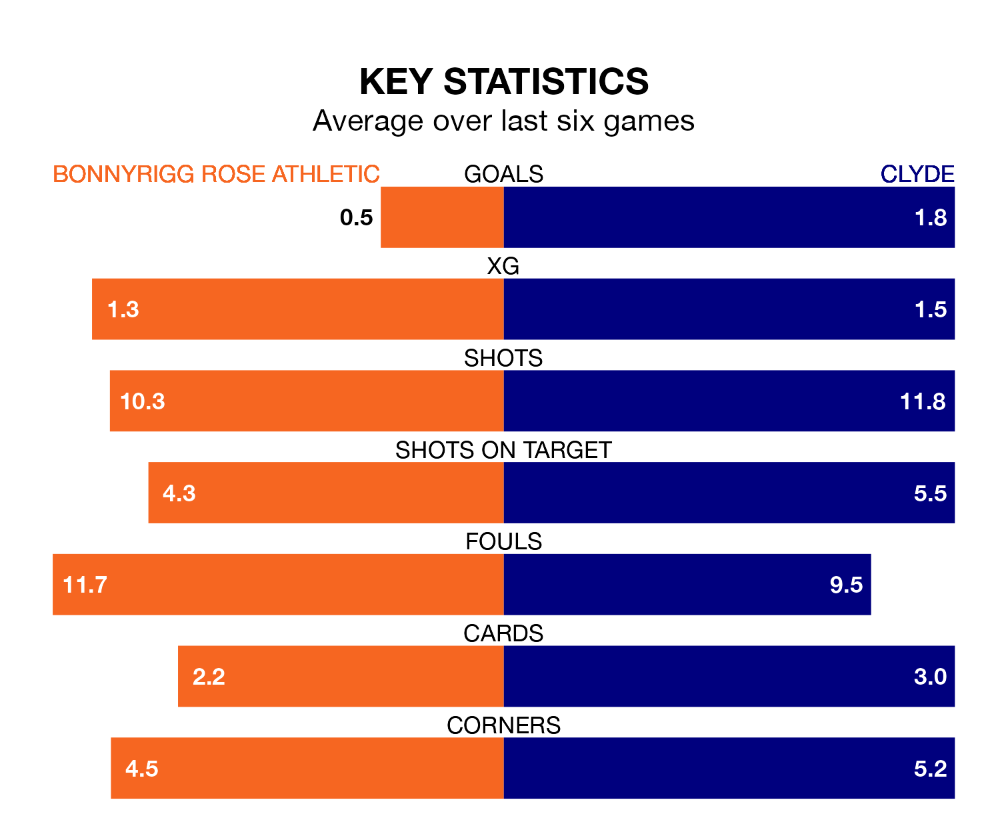

Saturday's match at New Dundas Park sees two relegation candidates play each other, as eighth-ranked Bonnyrigg Rose Athletic host bottom of the table Clyde.
Bonnyrigg Rose have picked up 30 points from their first 30 League Two games, with seven wins and nine draws.
That is six points more than the Bully Wee have collected, having won five and drawn nine.
Bonnyrigg Rose are in terrible form in League Two, with no wins and two draws from their last six games.
With three wins and three losses over that period, Clyde's form is much better – they have taken nine points from 18, compared to Athletic's two.
In Martin Rennie, the Bully Wee have one of the league's most on-form strikers so far this season. He has notched 10 goals in 22 appearances, to sit fourth in the scoring charts.
The hosts' top scorer, with 10 goals in 27 games, is Neil Martyniuk.
With 34 goals in 28 games so far this season, Bonnyrigg Rose are scoring at below the league average rate with 1.2 goals per game. And they are conceding more than average, letting in 38 goals at a rate of 1.4 per game.
The away side, meanwhile, are average scorers, with 1.3 goals per game. They have conceded 1.8 goals per game.
In the last five years, Bonnyrigg Rose and Clyde have played each other on five occasions. Bonnyrigg Rose won three of them and Clyde two.
On average, Bonnyrigg Rose scored 1.8 goals and the Bully Wee 1.4 in those matches.
Their last meeting was on January 6, when Clyde won 3-2 at home.
Bonnyrigg Rose's last match was on March 9, a 1-0 loss against Elgin City.
Clyde lost 2-1 against Forfar Athletic last time out, also on March 9, with Liam Scullion on the scoresheet.
Updated: 15:10 (UTC), 15/03/24